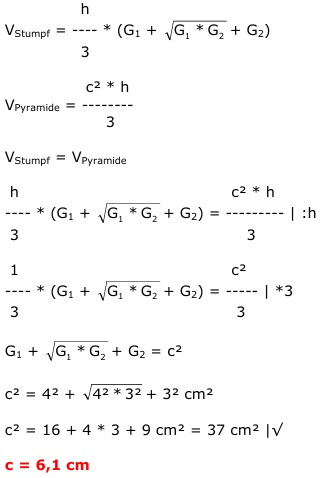

Aufgabe 262 Ein quadratischer Pyramidenstumpf mit der Grundseite 4 cm und der Deckseite 3 cm soll gleiche Höhe und gleiches Volumen wie eine quadratische Pyramide haben. Wie groß ist deren Grundseite c? 